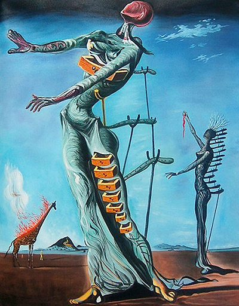

'Un Chien Andalou' | 1929
The Persistence of Memory | 1931
Eggs on the Plate without the Plate | 1932
Retrospective Bust of a Woman | 1933
The Ghost of Vermeer of Delft which can be used as a Table | 1934

Burning Giraffe | 1937
The Discovery of America by Christopher Colombus | 1959
The Hallucinagenic Toreador | 1970
Mae West Room | 1974